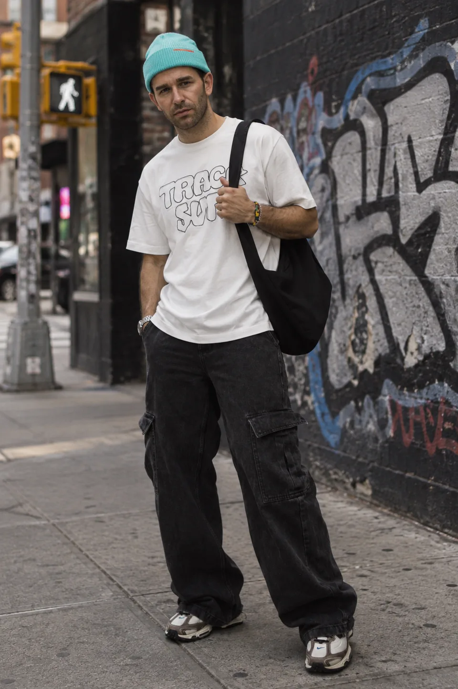

01美式街头American Street
场景参考：城市街角与涂鸦墙。
AI 合成 / AI-generated缺图补测 · 与历史另一端配对 / Supplementary + historical pair
 展示预览 / Display preview · 960×1440 WebP
展示预览 / Display preview · 960×1440 WebPAI生成 / AI-generated · 原图 / Original PNG 1024×1536 ↗

展示预览 / Display preview · 960×1440 WebPAI生成 / AI-generated · 原图 / Original PNG 1024×1536 ↗
查看原图来源与作者 / Source and author · Hakim LEVEL · Pexels License（非CC0；图片权利不随代码Apache-2.0许可）
查看身份参考来源 / Identity reference source · Eyüpcan Timur · Pexels 真实摄影身份参考；未见本项目单独人物授权记录。
本组展示与权利说明 / Display & rights notes
已获维护者批准公开 / Maintainer-approved for display · 带署名的AI合成研究比较，已获维护者批准公开；不作人物或品牌代言，也不作为商品实拍或广告投放。
身份参考来自署名摄影作品，不是AI身份素材。此页仅展示AI合成比较结果，不表示本人参与、同意或为项目与品牌背书；不声称人物权利已全部清理。
缺图补测 · 与历史另一端配对 · 渲染合成：ChatGPT 网页内置生图 · 商品保真：平局 · 身份保真：ChatGPT 网页内置生图
入口建议：默认Codex；可根据本组样例选择网页，但这不是稳定胜率或下一张结果保证。
逐组评审依据 / Review notes (中文)
[
{
"id": "pair-01",
"rendering": {
"winner": "B",
"reasons": [
"B的眉骨、鼻侧和下颌明暗转折较完整，脸与手臂都处于同一柔和街道光线中；A的面部略显灰平。",
"两者棉T与水洗牛仔均有自然纹理；B的手臂汗毛、胡茬和皮肤层次略更清楚，未呈现明显蜡感。",
"B的握带手、肩带拉力及包体下坠能连成合理受力关系，腰腹斜褶与裤脚堆叠也可信；A同样没有明显穿模。",
"两者鞋底均贴合路面，B人物、近墙与远处街道的清晰度递减更连贯；可见握带手指没有显著结构错误。",
"B的主体与背景明暗分离稍好，包体与黑裤仍保留层次，整幅街拍完成度略占优。"
]
},
"product": {
"winner": "tie",
"reason": "两者都保留薄荷色翻边帽、白色双行描边字母T、黑色宽腿工装牛仔与大黑包。印花均有遮挡或字形变形，帽标也难以核对；未见足以稳定区分的整体保真优势。"
},
"identity": {
"winner": "B",
"reason": "对照身份参考，B的眉形、较宽的鼻头、唇形和下颌宽度更接近；A的脸更瘦长、鼻子更尖。"
}
},
{
"id": "pair-01",
"rendering": {
"winner": "tie",
"reasons": [
"A与B的面部、颈部和白T恤均有连续的柔光明暗，体积塑造相近。",
"两张都能区分棉T恤、针织帽、洗水牛仔与帆布包，皮肤胡茬和手臂纹理自然。",
"A的下摆向口袋汇聚，B的腰部与握带处出现相应牵拉，裤脚堆褶均有重量感。",
"两张鞋底接地、人物与墙面的透视及远景虚化都可信；B握带手与背带遮挡没有明显穿模。",
"两张整体均达到完整街头摄影观感，未见足以明确拉开完成度的缺陷。"
]
},
"product": {
"winner": "tie",
"reason": "两张均保留参考的浅蓝翻边针织帽、白色描边字T恤、黑色大袋与宽松黑色工装牛仔裤；字样均有遮挡或字形偏差，不能据此确认一方更忠实。"
},
"identity": {
"winner": "B",
"reason": "B的眼眉间距、鼻部宽度、嘴唇和胡茬覆盖更接近身份参考；A的脸显得更狭长、嘴部更紧。"
}
},
{
"id": "pair-01",
"rendering": {
"winner": "B",
"reasons": [
"B脸部眉骨、鼻梁和下颌的明暗衔接更清楚，A面部略显灰平；两者都符合街边散射光。",
"B手臂毛发、胡茬与白色棉衫的细微起伏自然，黑包的厚度也更容易辨认。",
"B腰侧被口袋和包带牵引的褶皱更连贯，裤脚堆积有明确重力方向；A也没有明显穿模。",
"B握包带的手指与带子遮挡关系成立，包体在腋下至胯侧有可信的悬挂和受力关系。",
"两图鞋底都贴地，B人物与墙面、街道的景深衔接略更统一，整体街拍完成度略高。"
]
},
"product": {
"winner": "tie",
"reason": "两者都保留青色翻边帽、红色小标、白色空心字母T恤、黑色大侧袋阔腿裤及黑色单肩包；字母都受包带遮挡，参考里的大面积廓形与配色均得到保留，没有足以稳定区分的商品差异。"
},
"identity": {
"winner": "B",
"reason": "B的眉形、眼睛间距、鼻翼和有胡茬的下颌轮廓更接近身份参考；A鼻部与嘴唇显得更窄，脸型略偏长。"
}
}
]用自己的服饰尝试这个风格 / Try this style with your own garment
请用 $threadtruth-studio 识别我上传的服饰图，选择 美式街头 / American Street（american-street）。服饰以我的图片为准，不复制案例人物或新增款式。先给我风格、动作、场景和画幅方案，再让我选择 Codex 或 ChatGPT 网页。现在不要上传到网页或生图。
Use $threadtruth-studio to identify the garment photo I uploaded and apply the American Street style (american-street). Treat my photo as the source of truth for the garment; do not copy the example person or add new garments. First propose the style, poses, scene and aspect ratio, then let me choose Codex or ChatGPT web. Do not upload anything to the web or generate images yet.